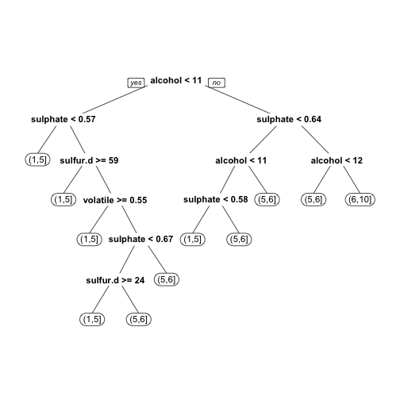

- Съосновател на Intuitics/StatAce
- От 2.5 години разработваме софтуер на базата на R
- Бизнес образование
- Опит с анализ на данни в Agilent Technologies, HP, и университета
Въведение в R
Кристиан Младенов
За мен
Какво е R
- R е език за статистическо програмиране = програмен език с изчислителна и графична насока
- Диалект на комерсиалните езици S и S-Plus (сега собственост на Tibco)
- Започнат през 1993 от Robert Gentleman и Ross Ihaka в университета в Оукланд, Нова Зенландия
- Ползва се от над 2 милиона потребителя
- Растежа се забърва последните няколко години, преминавайки от академичните среди към бизнеса
Предимства
- Пълен набор от фукнции за целия процес на анализа, от свързването към данни до комуникирането на резултати
- Повече от 6000 допълнителни пакета. R често получава най-новите анализи първи.
- Много добри графични способности
- Безплатен, с отворен код
- Няколко комерсиални предложения
- Изключително активна общност
- Напълно функционален програмен език
Популярност

Растеж на броя на R пакетите

Недостатъци
- Сравнително труден за научаване
- Сравнително слаби графични интерфейси
- Документацията не е винаги ясна или пълна
- Не всички пакети са с добро качество
- Много начини за постигане на една и съща цел
- В много случай ограничен от достъпната памет (RAM)
- Липса на вградена паралелизация
Сравнение с конкуренцията
| R | SAS | SPSS | Matlab | Python | |
|---|---|---|---|---|---|
| Цена | Безплатен | Много скъп | Скъп | Скъп | Безплатен |
| Нови функции | Бързо | Бавно | Бавно | Бавно | Средно |
| Насока | Широка | Широка | Социални науки | Инженерни науки + ML | Широка |
| Леснота на учене | Труден | Среден | Лесен | Лесен | Среден |
| Графични способности | Много добри | Средни | Средни | Добри | Средни |
| Работа с данни | Добра | Много добра | Слаба | Добра | Много добра |
Развитие
- Бърз разтеж, ползва се от фирми като Google, Facebook, Twitter, Amazon, Netflix, Microsoft, Expedia, Dell, HP, и много други
- По-достъпни пакети с богат набор от функции (dplyr, reshape2, caret, и т.н.)
- Често се ползва за прототипиране, след което анализа се пренаписва с Java, Python и т.н.
- Допълва се с Python за събиране и обработка на данни, както и за анализ на текст
- Сериозни усилия за премахване на ограниченията с паметта и процесора
Въведение в езика
- R се ползва през интерактивна конзола (често RStudio)
- Ползва къдрави скоби като C, Java и JavaScript
- Като цяло е функционален програмен език = съставен от функции които приемат обекти. Обектите рядко имат функции.
Пример:
"Hello world" # [1] "Hello world" 1234 # [1] 1234 1 + 2 # [1] 3
Видове обекти
- Има няколко основни вида обекти в R. Всеки обект има клас (
class()) - Нулева стойност (
NULL) - Вектор - редица от примитивни структури (липсващи стойности =
NA):- Двоични, TRUE/FALSE или T/F (
logical) - Числа: дробни (
numeric), цели (integer), комплексни (complex) - Текст (
character) и фактор/категория (factor,ordered.factor) - Дата до ден (
Date) и до секунда (POSIXt)
- Двоични, TRUE/FALSE или T/F (
- Матрица (
matrix): 2-измерен вектор - Масив (
array): вектор в 2 или повече измерения - Списък (
list): съдържа произволни други обекти (всеки има индекс + евентуално име) - Таблица (
data.frame): списък който съдържа само вектори с еднаква дължина
Задаване на стойност на променливи
- Оператора за задание е
<-(може да се ползва и=но не е препоръчано) Изпълнението само на име на променлива връща нейната стойност
hello <- "Здравей" hello # [1] "Здравей"helloе текстов вектор с дължина 1:class(hello) # [1] "character" length(hello) # [1] 1
Помощ за функция
? ф и help(ф) показват документацията на функция, example(ф) показва примери:
? rnorm или help(rnorm)

Търсене в документацията
Tърсете в документацията с ?? термин:
?? random

Задаване на стойност на функции
- В R може да се зададе стойност на функция
Пример: елементите във вектор могат да имат имена (текстов вектор):
names(hello) # NULLЗадаване на имена:
names(hello) <- "Това е R" hello # Това е R # "Здравей" names(hello) # [1] "Това е R"
Работа с обекти
- Имената на обекти могат да съдържат букви, цифри,
.и_. Конвенция: data.frame, as.list - Отделните елементи на всеки обект се достигат с квадратни скоби (
[...]). Индексите винаги започват от 1. Функция
c()създава/комбинира вектор с повече от един елемент:hello.vector <- c(hello, "Нова стойност") hello.vector # Това е R # "Здравей" "Нова стойност" names(hello.vector)[2] <- "Ново име" hello.vector # Това е R Ново име # "Здравей" "Нова стойност" hello.vector[2] # Ново име # "Нова стойност"
Работа с обекти (2)
Всеки обект може да има атрибути, които се съхраняват в списък по име
Класовете на обектите са атрибут, както и имената на елементите във вектор и нивата на фактор:
attributes(hello.vector)
# $names
# [1] "Това е R" "Ново име"
attributes(as.factor(hello.vector))
# $names
# [1] "Това е R" "Ново име"
#
# $levels
# [1] "Здравей" "Нова стойност"
#
# $class
# [1] "factor"
Можете да добавяте свои атрибути:
attr(hello.vector, "my.attribute") <- "А"
attributes(hello.vector)
# $names
# [1] "Това е R" "Ново име"
#
# $my.attribute
# [1] "А"
Работа с вектори
- Конструкцията
X:Yсъздава вектор отXдоY(растящ или намаляващ) Разлики в класовете:
numbers <- c(-1:1, rnorm(n = 3, mean = 3, sd = 10)) numbers # [1] -1.000000 0.000000 1.000000 17.244798 13.357478 0.469073 class(numbers) # [1] "numeric" as.integer(numbers) # [1] -1 0 1 17 13 0 as.character(numbers) # [1] "-1" "0" "1" # [4] "17.2447978030495" "13.357477787566" "0.469072955032535" as.logical(numbers) # [1] TRUE FALSE TRUE TRUE TRUE TRUE
Операции с вектори
Векторните операции винаги се извършват върху всички елементи:
vec <- 1:10 vec * 2 # [1] 2 4 6 8 10 12 14 16 18 20 vec + 2 # [1] 3 4 5 6 7 8 9 10 11 12Когато единият вектор е по-къс, той се преизползва от началото:
multiply <- c(2, 3) vec * multiply # [1] 2 6 6 12 10 18 14 24 18 30 ## = 1 2 3 4 5 6... ## * 2 3 2 3 2 3...
Работа с матрици
Матрицата представлява вектор, с дефиниран брой редове и колони, и може да бъде достъпна като вектор (с [x]). Броят на редовете и колоните се съхранява в атрибута dim.
Създава се и се манипулира по колона, елементи се избират с [колони, редове]
mat <- matrix(1:4, nrow = 2); mat
# [,1] [,2]
# [1,] 1 3
# [2,] 2 4
mat[2, 1]
# [1] 2
mat[2,]
# [1] 2 4
mat[, 2]
# [1] 3 4
mat[4]
# [1] 4
byrow обръща реда на създаване и достъп (по ред, [редове, колони])
mat <- matrix(1:4, 2, byrow = T); mat
# [,1] [,2]
# [1,] 1 2
# [2,] 3 4
mat[2, 1]
# [1] 3
mat[2,]
# [1] 3 4
mat[, 2]
# [1] 2 4
Операции с матрици
Матричните операции се извършват:
Нормално (като вектори)
mat
# [,1] [,2]
# [1,] 1 2
# [2,] 3 4
mat * mat
# [,1] [,2]
# [1,] 1 4
# [2,] 9 16
mat + 2
# [,1] [,2]
# [1,] 3 4
# [2,] 5 6
Нормално (като вектори)
mat ^ mat
# [,1] [,2]
# [1,] 1 4
# [2,] 27 256
Не толкова (като матрици)
mat %*% mat
# [,1] [,2]
# [1,] 7 10
# [2,] 15 22
Списъци
Списъкът представлява масив от други обекти. С [x] се създава нов списък само с желаните елементи. С [[x]] или $ се достига отделен елемент.
my.list <- list(Numbers = 1:5,
Names = c("Иван", "Петя"),
Date = Sys.Date()); my.list
# $Numbers
# [1] 1 2 3 4 5
#
# $Names
# [1] "Иван" "Петя"
#
# $Date
# [1] "2015-03-11"
my.list$Date
# [1] "2015-03-11"
my.list[c(2, 3)]
# $Names
# [1] "Иван" "Петя"
#
# $Date
# [1] "2015-03-11"
my.list["Names"]
# $Names
# [1] "Иван" "Петя"
my.list[["Names"]]
# [1] "Иван" "Петя"
my.list[[3]]
# [1] "2015-03-11"
Таблици
- Таблицата е списък от вектори с еднаква дължина
- Всеки ред може да има име, което е достъпно и може да се променя чрез
names() - С
[колони]се създава нова таблица с желаните колони. С[ред, колона]се достига една клетка. С[[колона]]или$се достига вектора на колона.
df <- data.frame(Age = c(29, 34),
Gender = as.factor(c("M", "F")),
row.names = c("Иван", "Петя"))
df
# Age Gender
# Иван 29 M
# Петя 34 F
df[2]
# Gender
# Иван M
# Петя F
df[[2]]
# [1] M F
# Levels: F M
class(df[[2]])
# [1] "factor"
unclass(df[[2]])
# [1] 2 1
# attr(,"levels")
# [1] "F" "M"
df[2, 1]
# [1] 34
Екосистема
- Графични интерфейси: RStudio, R Commander, Rattle, Deducer,
- Създаване на доклади: RMarkdown, IPython, Knitr, Sweave
- Интерактивни уеб апликации: Shiny, Intuitics
- Скалируемост: H20 (система базирана на Hadoop), rmr2 (Hadoop MapReduce)
- Интерпретатори:
- Комерсиални: Revolution Analytics, Tibco TERR, HP Distributed R, Teradata Aster R, Oracle R Enterprise
- С отворен код: Pretty Quick R, Renjin, Riposte, CXXR, FastR
Екосистема (2)
- Пакети за паралелизация: multicore, snowfall/snow, Rmpi/pdbMPI
- Графични пакети: ggplot2, ggvis, googleVis, rCharts, lattice
- Работа с данни:
- Свързване: RCurl, ROracle, RMySQL, RODBC, RPostgreSQL, RMongo, RSQLite, rhdfs, rhbase
- Транформация: dplyr/plyr, reshape2, sqldf
- Големи данни: ff, database, bigmemory, bigalgebra и приятели
- Продуктизиране: OpenCPU, rApache, rServe
- Други: slidify (тази презентация), animation, audio, rgl (3D графики), httpuv (HTTP сървър)
Ще анализираме червени и бели вина!
- Данни от https://archive.ics.uci.edu/ml/datasets/Wine+Quality
- Получаваме два файла - един с бели и един с червени вина
- Целта е да установим как химичните съставки определят качеството на виното
- Колони (12):
- fixed acidity
- volatile acidity
- citric acid
- residual sugar
- chlorides
- free sulfur dioxide
- total sulfur dioxide
Колони (продължение):
- density
- pH
- sulphates
- alcohol
Изходна стойност
- quality (от 0 до 10)
Зареждане на данните
data.red <- read.csv("winequality-red.csv", header = T, sep =";")
head(data.red, 1)
# fixed.acidity volatile.acidity citric.acid residual.sugar chlorides
# 1 7.4 0.7 0 1.9 0.076
# free.sulfur.dioxide total.sulfur.dioxide density pH sulphates alcohol
# 1 11 34 0.9978 3.51 0.56 9.4
# quality
# 1 5
data.white <- read.csv("winequality-white.csv", header = T, sep =";")
head(data.white, 1)
# fixed.acidity volatile.acidity citric.acid residual.sugar chlorides
# 1 7 0.27 0.36 20.7 0.045
# free.sulfur.dioxide total.sulfur.dioxide density pH sulphates alcohol
# 1 45 170 1.001 3 0.45 8.8
# quality
# 1 6
Добавяне на типа вино в таблицата
data.red <- transform(data.red, type = "red")
head(data.red, 1)
# fixed.acidity volatile.acidity citric.acid residual.sugar chlorides
# 1 7.4 0.7 0 1.9 0.076
# free.sulfur.dioxide total.sulfur.dioxide density pH sulphates alcohol
# 1 11 34 0.9978 3.51 0.56 9.4
# quality type
# 1 5 red
data.white <- transform(data.white, type = "white")
head(data.white, 1)
# fixed.acidity volatile.acidity citric.acid residual.sugar chlorides
# 1 7 0.27 0.36 20.7 0.045
# free.sulfur.dioxide total.sulfur.dioxide density pH sulphates alcohol
# 1 45 170 1.001 3 0.45 8.8
# quality type
# 1 6 white
Обединяване на данните
data <- rbind(data.red, data.white)
data[c(1, 2000), ]
# fixed.acidity volatile.acidity citric.acid residual.sugar chlorides
# 1 7.4 0.7 0.0 1.9 0.076
# 2000 6.3 0.2 0.4 1.5 0.037
# free.sulfur.dioxide total.sulfur.dioxide density pH sulphates
# 1 11 34 0.9978 3.51 0.56
# 2000 35 107 0.9917 3.46 0.50
# alcohol quality type
# 1 9.4 5 red
# 2000 11.4 6 white
Как се филтрират редове и колони
library(dplyr)
nrow(data)
# [1] 6497
data.red <- filter(data, type == "red")
ncol(data.red)
# [1] 13
names(data.red)[13]
# [1] "type"
data.red <- select(data.red, -type)
ncol(data.red)
# [1] 12
За сравнение, филтрирането и махането на колона без dplyr:
data.red <- data[data$type == "red", ]
data.red <- data.red[, -which(names(data.red) == "type")]
Подготвяне на данни за плотове
library(reshape2)
data.red <- select(filter(data, type == "red"), -type)
data.white <- select(filter(data, type == "white"), -type)
data.red.for.plot <- melt(data.red, id.vars = NULL)
data.white.for.plot <- melt(data.red, id.vars = NULL)
data.red.for.plot[1:7, ]
# variable value
# 1 fixed.acidity 7.4
# 2 fixed.acidity 7.8
# 3 fixed.acidity 7.8
# 4 fixed.acidity 11.2
# 5 fixed.acidity 7.4
# 6 fixed.acidity 7.4
# 7 fixed.acidity 7.9
Плотове на червени вина
library(ggplot2)
ggplot(data.red.for.plot,
aes(x = value)) +
facet_wrap(~variable,
scales = "free_x") +
geom_histogram()

Обобщаващи данни
library(psych);
describe(data.red)
# vars n mean sd median trimmed mad min
# fixed.acidity 1 1599 8.32 1.74 7.90 8.15 1.48 4.60
# volatile.acidity 2 1599 0.53 0.18 0.52 0.52 0.18 0.12
# citric.acid 3 1599 0.27 0.19 0.26 0.26 0.25 0.00
# residual.sugar 4 1599 2.54 1.41 2.20 2.26 0.44 0.90
# chlorides 5 1599 0.09 0.05 0.08 0.08 0.01 0.01
# free.sulfur.dioxide 6 1599 15.87 10.46 14.00 14.58 10.38 1.00
# total.sulfur.dioxide 7 1599 46.47 32.90 38.00 41.84 26.69 6.00
# density 8 1599 1.00 0.00 1.00 1.00 0.00 0.99
# pH 9 1599 3.31 0.15 3.31 3.31 0.15 2.74
# sulphates 10 1599 0.66 0.17 0.62 0.64 0.12 0.33
# alcohol 11 1599 10.42 1.07 10.20 10.31 1.04 8.40
# quality 12 1599 5.64 0.81 6.00 5.59 1.48 3.00
# max range skew kurtosis se
# fixed.acidity 15.90 11.30 0.98 1.12 0.04
# volatile.acidity 1.58 1.46 0.67 1.21 0.00
# citric.acid 1.00 1.00 0.32 -0.79 0.00
# residual.sugar 15.50 14.60 4.53 28.49 0.04
# chlorides 0.61 0.60 5.67 41.53 0.00
# free.sulfur.dioxide 72.00 71.00 1.25 2.01 0.26
# total.sulfur.dioxide 289.00 283.00 1.51 3.79 0.82
# density 1.00 0.01 0.07 0.92 0.00
# pH 4.01 1.27 0.19 0.80 0.00
# sulphates 2.00 1.67 2.42 11.66 0.00
# alcohol 14.90 6.50 0.86 0.19 0.03
# quality 8.00 5.00 0.22 0.29 0.02
Плот на sulphates на червени вина
data.red.sulphates = filter(
data.red.for.plot,
variable == "sulphates")
ggplot(data.red.for.plot,
aes(x = value))
+ geom_histogram()

Филтриране на силно отличаващи се стойности (outliers)
nrow(data.red)
# [1] 1599
data.red = filter(data.red, sulphates < 1.5)
nrow(data.red)
# [1] 1591
Проверка за колинеарност
library(corrplot)
corrs <- cor(data.red,
use="complete.obs")
corrplot(corrs,
method= "circle")

Кoмбинираме стойности
data.red <- mutate(data.red,
acidity.density = (fixed.acidity + citric.acid + density - pH) / 3,
sulfur.dioxide = (free.sulfur.dioxide + total.sulfur.dioxide) / 2)
data.red <- select(data.red, -c(fixed.acidity, citric.acid, density,
free.sulfur.dioxide, total.sulfur.dioxide, pH))
head(data.red, 3)
# volatile.acidity residual.sugar chlorides sulphates alcohol quality
# 1 0.70 1.9 0.076 0.56 9.4 5
# 2 0.88 2.6 0.098 0.68 9.8 5
# 3 0.76 2.3 0.092 0.65 9.8 5
# acidity.density sulfur.dioxide
# 1 1.629267 22.5
# 2 1.865600 46.0
# 3 1.859000 34.5
Проверка за колинеарност (отново)
library(corrplot)
corrs <- cor(data.red,
use="complete.obs")
corrplot(corrs,
method= "circle")

Линеен регресионен модел
model <- lm(quality ~ volatile.acidity + residual.sugar + chlorides + sulphates +
alcohol + acidity.density + sulfur.dioxide, data = data.red)
summary(model)
Линеен регресионен модел (резултат)
| Estimate | Std. Error | t value | Pr(>|t|) | |
|---|---|---|---|---|
| (Intercept) | 2.6775 | 0.2224 | 12.04 | 0.0000 |
| volatile.acidity | -1.0458 | 0.1011 | -10.34 | 0.0000 |
| residual.sugar | 0.0074 | 0.0120 | 0.61 | 0.5406 |
| chlorides | -1.7903 | 0.4101 | -4.37 | 0.0000 |
| sulphates | 1.1291 | 0.1254 | 9.00 | 0.0000 |
| alcohol | 0.2777 | 0.0167 | 16.60 | 0.0000 |
| acidity.density | 0.0533 | 0.0268 | 1.98 | 0.0473 |
| sulfur.dioxide | -0.0030 | 0.0009 | -3.57 | 0.0004 |
Имаме няколко променливи с добри показатели:
- volatile.acidity
- chlorides
- sulphates
- alcohol
- acidity.density
- sulfur.dioxide
Класификационен модел
Трябва да групираме качеството на вината:
data.red <- mutate(data.red, quality.group = cut(quality, c(1, 4, 6, 10)))
head(data.red, 3)
# volatile.acidity residual.sugar chlorides sulphates alcohol quality
# 1 0.70 1.9 0.076 0.56 9.4 5
# 2 0.88 2.6 0.098 0.68 9.8 5
# 3 0.76 2.3 0.092 0.65 9.8 5
# acidity.density sulfur.dioxide quality.group
# 1 1.629267 22.5 (4,6]
# 2 1.865600 46.0 (4,6]
# 3 1.859000 34.5 (4,6]
table(data.red$quality.group)
#
# (1,4] (4,6] (6,10]
# 62 1312 217
Класификационен модел (2)
library(rpart)
library(rpart.plot)
model <- rpart(quality.group ~
volatile.acidity +
residual.sugar +
chlorides + sulphates +
alcohol + acidity.density +
sulfur.dioxide,
data = data.red)
prp(model)

Благодаря!
Кристиан Младенов
Презентация с код + данни: www.github.com/zhvihti